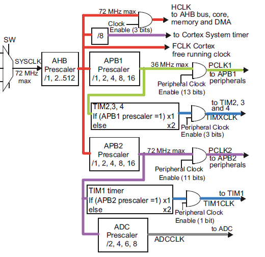

МИНИСТЕРСТВО ОБРАЗОВАНИЯ И НАУКИ НИЖЕГОРОДСКОЙ ОБЛАСТИ
ГОСУДАРСТВЕННОЕ БЮДЖЕТНОЕ ПРОФЕССИОНАЛЬНОЕ
ОБРАЗОВАТЕЛЬНОЕ УЧРЕЖДЕНИЕ
«НИЖЕГОРОДСКИЙ РАДИОТЕХНИЧЕСКИЙ КОЛЛЕДЖ»
Электронное учебно-методическое пособие
«Микропроцессорные системы»
Разработал:
Обучающийся группы: 0КСК-00-0
ФИО: Иванов Иван Иванович
Руководитель рабоы:
ФИО: Иванов Иван Иванович
Нижний Новгород
2023 г.
О пособии
Данное электронное учебно-методическое пособие предназначено для более глубокого изучения дисциплины "Микропроцессорные системы" в части МК STM32
Чему вы научитесь:
- Пользоваться документацией микроконтроллера STM32
- Изучите библиотеку CMSIS и научитесь подключать ее к своему проекту
- Научитесь настраивать микроконтроллер на работу от внешнего кварцевого резонатора
- Изучите регистры RCC и научитесь ее настраивать
- Научитесь пользоваться STM32CubeMx
- Разберетесь что такое Cube IDE и как этим пользоваться
Данное пособие предназначено для студентов
Содержание пособия
- Программирование STM 32
- Программирование STM32 Часть 1: Документация
- Программирование STM32. Часть 2: IAR + CMSIS
- Программирование STM32. Часть 3: Система тактирования
- Программирование STM32. Часть 4: Настройка RCC
- Быстрый старт с STM32CubeMx
- STM32 и CubeIDE изучаем с нуля до мастера
- Часть 1 - «Первые шаги»
- Часть 2 - «Работа с АЦП — независимый режим»
Теория
Программирование STM 32

Часть 3: Система тактирования
Настройка микроконтроллера на работу от внешнего кварцевого резонатора